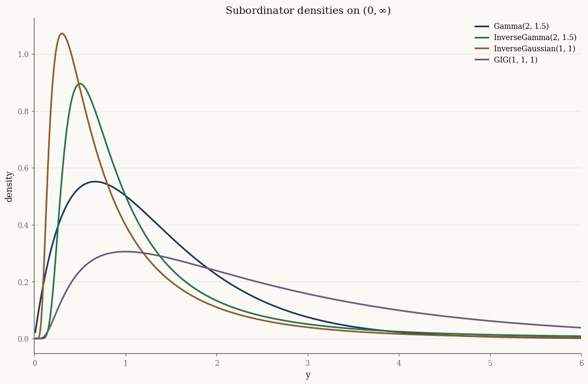
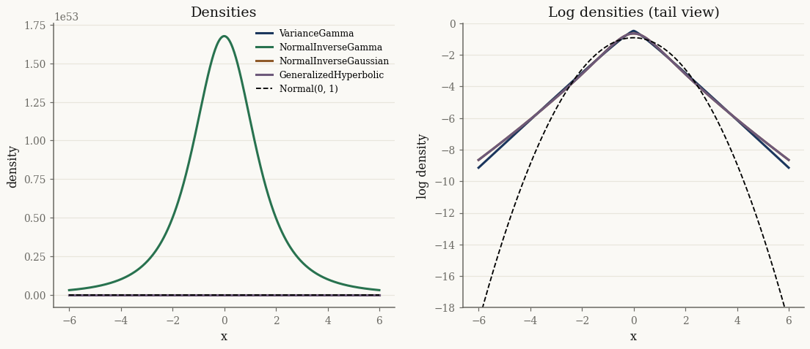

A tour of the GH family#
The Generalized Hyperbolic (GH) distribution and its relatives are all normal variance-mean mixtures: a Gaussian whose mean and covariance are scaled by a positive latent variable \(Y\),
Different choices of the subordinator \(Y\) produce the whole family. This tutorial maps that hierarchy and shows how the pieces fit together.
import jax
jax.config.update("jax_enable_x64", True)
import jax.numpy as jnp
import numpy as np
from normix import (
Gamma, InverseGamma, InverseGaussian, GIG,
UnivariateVarianceGamma, UnivariateNormalInverseGamma,
UnivariateNormalInverseGaussian, UnivariateGeneralizedHyperbolic,
)
from normix.utils.plotting import set_theme
set_theme()
np.set_printoptions(precision=5, suppress=True)
The mixing mechanism#
Sampling is hierarchical: draw \(Y\), then draw \(X\) given \(Y\). We can reproduce a
marginal sample by hand and check it matches the built-in sampler. The joint
rvs returns both \(X\) and the latent \(Y\):
gh = UnivariateGeneralizedHyperbolic.from_classical(
mu=0.0, gamma=0.4, sigma=1.0, p=-0.5, a=1.0, b=1.0)
X, Y = gh.joint.rvs(50_000, seed=0)
print("X shape:", X.shape, " Y shape:", Y.shape)
print("E[Y] =", float(Y.mean()), " Var[Y] =", float(Y.var()))
print("skew(X) =", float(((X - X.mean())**3).mean() / X.std()**3))
X shape: (50000, 1) Y shape: (50000,)
E[Y] = 1.0080074760677304 Var[Y] = 1.0118961918124396
skew(X) = 1.137510856845186
The positive skew of \(X\) comes entirely from \(\gamma\): the variance-mean coupling tilts the Gaussian by an amount proportional to \(Y\).
Four subordinators#
The subordinator is itself an exponential family. The four building blocks are
Gamma, InverseGamma, InverseGaussian, and the GIG (Generalized Inverse
Gaussian) that nests them all:
subs = {
"Gamma(2, 1.5)": Gamma(alpha=jnp.array(2.0), beta=jnp.array(1.5)),
"InverseGamma(2, 1.5)": InverseGamma(alpha=jnp.array(2.0), beta=jnp.array(1.5)),
"InverseGaussian(1, 1)": InverseGaussian(mu=jnp.array(1.0), lam=jnp.array(1.0)),
"GIG(1, 1, 1)": GIG(p=jnp.array(1.0), a=jnp.array(1.0), b=jnp.array(1.0)),
}
import matplotlib.pyplot as plt
y = jnp.linspace(0.01, 6.0, 400)
fig, ax = plt.subplots()
for name, s in subs.items():
ax.plot(np.asarray(y), np.asarray(jax.vmap(s.pdf)(y)), label=name)
ax.set_xlabel("y"); ax.set_ylabel("density"); ax.set_xlim(0, 6)
ax.set_title("Subordinator densities on $(0, \\infty)$")
ax.legend()
plt.show()

The GIG nests the others#
The GIG distribution with parameters \((p, a, b)\) has density on \((0,\infty)\)
proportional to \(y^{p-1}\exp\!\big(-\tfrac12(a y + b/y)\big)\). Its degenerate
limits recover the simpler subordinators exactly:
Limit |
Recovers |
|---|---|
\(b \to 0,\ p > 0\) |
\(\mathrm{Gamma}(p,\, a/2)\) |
\(a \to 0,\ p < 0\) |
\(\mathrm{InverseGamma}(-p,\, b/2)\) |
\(p = -\tfrac12\) |
\(\mathrm{InverseGaussian}\) |
x = jnp.linspace(0.05, 6.0, 300)
def max_logp_gap(d1, d2):
return float(jnp.max(jnp.abs(jax.vmap(d1.log_prob)(x) - jax.vmap(d2.log_prob)(x))))
# b -> 0, p > 0 => Gamma(p, a/2)
gap_gamma = max_logp_gap(
GIG(p=jnp.array(2.0), a=jnp.array(3.0), b=jnp.array(1e-8)),
Gamma(alpha=jnp.array(2.0), beta=jnp.array(1.5)))
# a -> 0, p < 0 => InverseGamma(-p, b/2)
gap_invgamma = max_logp_gap(
GIG(p=jnp.array(-2.0), a=jnp.array(1e-8), b=jnp.array(3.0)),
InverseGamma(alpha=jnp.array(2.0), beta=jnp.array(1.5)))
# p = -1/2 => InverseGaussian(mu, lam) with a = lam/mu^2, b = lam
mu_, lam_ = 1.5, 2.0
gap_invgauss = max_logp_gap(
GIG(p=jnp.array(-0.5), a=jnp.array(lam_ / mu_**2), b=jnp.array(lam_)),
InverseGaussian(mu=jnp.array(mu_), lam=jnp.array(lam_)))
print(f"GIG -> Gamma max|Δ log p| = {gap_gamma:.2e}")
print(f"GIG -> InverseGamma max|Δ log p| = {gap_invgamma:.2e}")
print(f"GIG -> InvGaussian max|Δ log p| = {gap_invgauss:.2e}")
GIG -> Gamma max|Δ log p| = 9.25e-08
GIG -> InverseGamma max|Δ log p| = 2.25e-08
GIG -> InvGaussian max|Δ log p| = 4.44e-15
The four marginal mixtures#
Choosing each subordinator for the mixing variable yields a named marginal distribution:
Subordinator |
Marginal |
normix class |
|---|---|---|
Gamma |
Variance Gamma |
|
Inverse Gamma |
Normal-Inverse Gamma |
|
Inverse Gaussian |
Normal-Inverse Gaussian |
|
GIG |
Generalized Hyperbolic |
|
We compare them in 1-D against a standard normal, all centred and scaled to unit variance, to expose the differences in the tails:
marginals = {
"VarianceGamma": UnivariateVarianceGamma.from_classical(
mu=0.0, gamma=0.0, sigma=1.0, alpha=1.2, beta=1.2),
"NormalInverseGamma": UnivariateNormalInverseGamma.from_classical(
mu=0.0, gamma=0.0, sigma=1.0, alpha=3.0, beta=2.0),
"NormalInverseGaussian": UnivariateNormalInverseGaussian.from_classical(
mu=0.0, gamma=0.0, sigma=1.0, mu_ig=1.0, lam=1.0),
"GeneralizedHyperbolic": UnivariateGeneralizedHyperbolic.from_classical(
mu=0.0, gamma=0.0, sigma=1.0, p=-0.5, a=1.0, b=1.0),
}
for name, m in marginals.items():
print(f"{name:24s} mean={float(m.mean()):+.3f} std={float(m.std()):.3f}")
VarianceGamma mean=+0.000 std=1.000
NormalInverseGamma mean=+0.000 std=1.000
NormalInverseGaussian mean=+0.000 std=1.000
GeneralizedHyperbolic mean=+0.000 std=1.000
from jax.scipy.stats import norm
xs = jnp.linspace(-6, 6, 600)
fig, axes = plt.subplots(1, 2, figsize=(12, 4.6))
for name, m in marginals.items():
pdf = np.asarray(jax.vmap(m.pdf)(xs))
axes[0].plot(np.asarray(xs), pdf, label=name)
axes[1].plot(np.asarray(xs), np.log(pdf + 1e-300), label=name)
for ax in axes:
ax.plot(np.asarray(xs), np.asarray(norm.pdf(xs)) if ax is axes[0]
else np.asarray(norm.logpdf(xs)),
"k--", lw=1.2, label="Normal(0, 1)")
ax.set_xlabel("x")
axes[0].set_ylabel("density"); axes[0].set_title("Densities")
axes[1].set_ylabel("log density"); axes[1].set_title("Log densities (tail view)")
axes[1].set_ylim(-18, 0)
axes[0].legend(fontsize=8)
plt.show()

The log-density panel makes the point: every GH-family marginal has heavier tails than the Gaussian. Mixing over a positive \(Y\) is exactly what produces the excess kurtosis seen in financial returns and other heavy-tailed data.
Takeaways#
The GH family is the set of normal variance-mean mixtures \(X \mid Y \sim \mathcal{N}(\mu + \gamma Y, \Sigma Y)\).
The subordinator \(Y\) selects the member: Gamma → VG, Inverse Gamma → NInvG, Inverse Gaussian → NIG, GIG → GH.
The
GIGnestsGamma,InverseGamma, andInverseGaussianas limits, so GH nests all the others.Asymmetry comes from \(\gamma\); heavy tails come from the mixing.
Next: Bessel functions and log_kv digs into the Bessel function log_kv that
makes the GH densities computable, and Random sampling covers drawing
samples from every distribution.